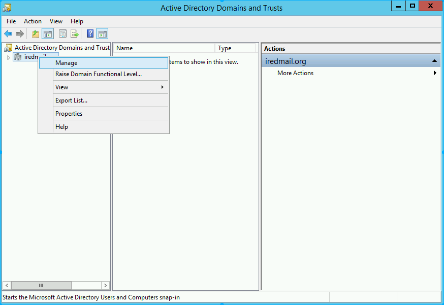
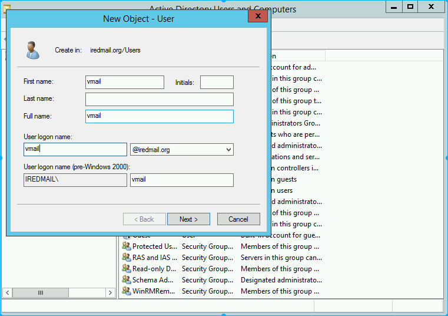
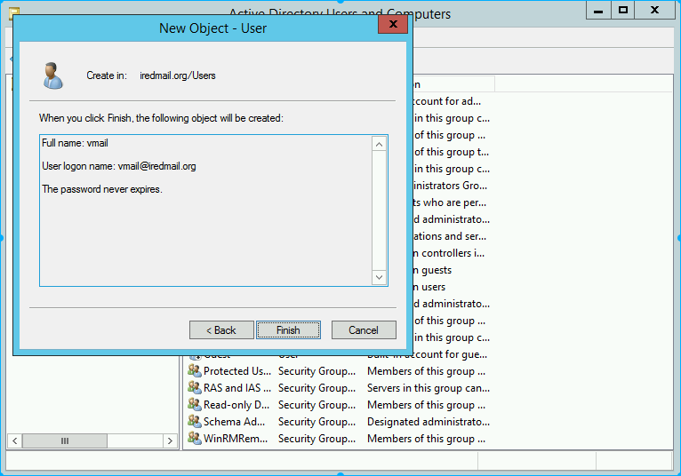
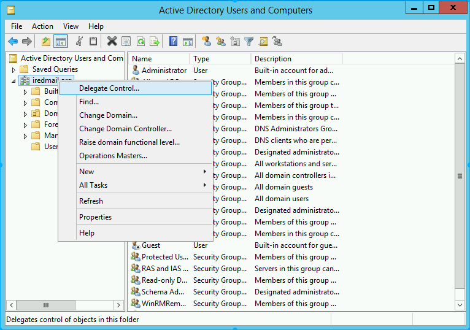
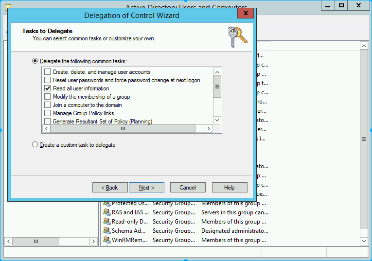
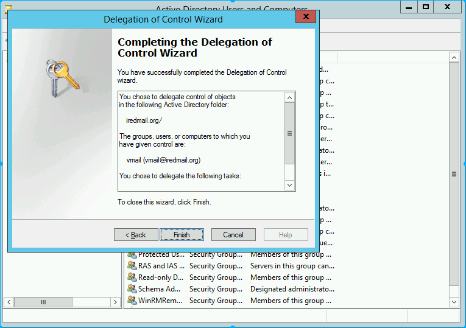
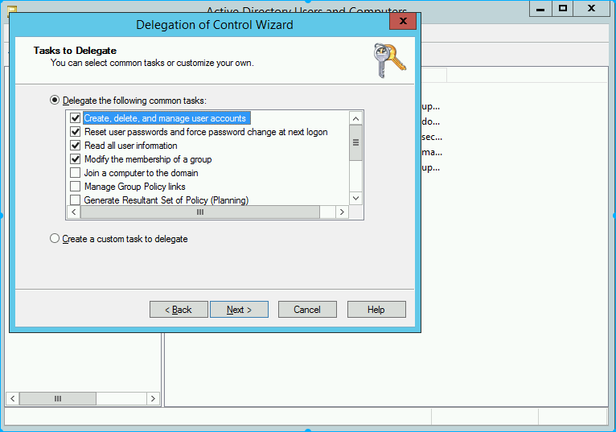

With iRedMail (ad backend), we need two accounts, admin account with all privileges, low-privileged account with read-only privilege. In this tutorial, we will show you how to create account in AD, with strong and complex password.
vmail.vmailadmin.This tutorial has been tested on:
If it works for you on different Windows Server version, please let us know.
Start on bottom-left corner of your Windows OS, click Server Manager.
Tools on top-right corner, click Active Directory Domains and Trusts.
iredmail.org, then click Manage.
Users --> New --> User.
vmail account info, click Next.
vmail account passowrd, and select Password never expires, click Next.
Finish to confirm.
vmail has created, we will set read-only permission for vmail, right click your AD domian here is iredmail.org, and select Delegate Control....
Next.
Add.
vmail, and click Ok.
Next.
"Read all user information", click Next.
Finish to confirm.
vmail created.Start on bottom-left corner of your Windows OS, click Server Manager.
Tools on top-right corner, click Active Directory Domains and Trusts.
iredmail.org, then click Manage.Users --> New --> User.
vmailadmin account info, click Next.
vmailadmin account passowrd, and select Password never expires, click Next.
Finish to confirm.
vmailadmin has created, we will set read-only permission for vmail, right click your AD domian here is iredmail.org, and select Delegate Control....Next.
Add.
vmailadmin, and click Ok.
Next.
"Create，delete, and manage user accounts", "Reset user passowords and force password change at next logon", "Read all user information", click Next.
Finish to confirm.
vmailadmin created.